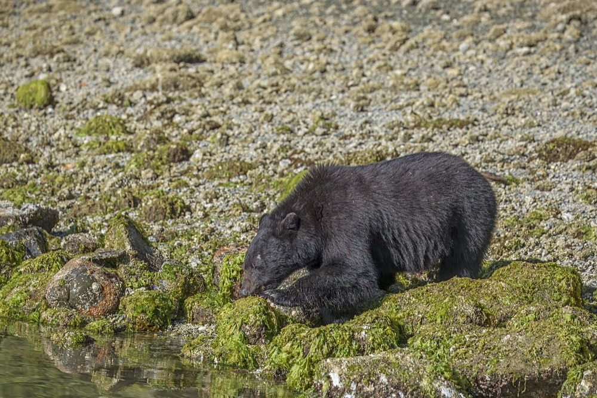
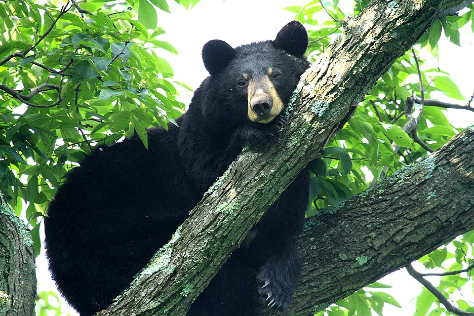

Black Bear
Ursus americanus (printed Ursa americanus in the Landowner's Guide)


- Kind
- mammal · Ursidae
- Native to Vermont
- yes
- Legal status
- Big game animal since 1941; regulated hunting; baiting outlawed; trapping banned 1967. The 2010-2020 Big Game Plan goal was a population of 4,500 to 6,000. (checked 2026-10-30)
Names
Black bear, Vermont's only bear species and the only bear east of the Mississippi River.
Range and habitat
Remote forest; common in most towns with large forest tracts, densest along the Green Mountain spine and in the northeast. Females commonly weigh 150 pounds, males 200 or more. A female's annual home range is 10 to 25 square miles and a male's 50 or more. Bears need large unfragmented forest, dense cover, water, and a mix of conifers, hardwoods and wetlands. Roads and developments that bring people permanently or seasonally reduce or exclude them.
How to identify (by season; look-alikes and the key difference)
The animal is hard to miss; sign is what a landowner looks for.
Through the year
Dates are typical for Vermont and shift with elevation and year; "approximate" means the source gave a season and the dates are a translation of it.
| When | What | Look for | What to do | Dates |
|---|---|---|---|---|
| Mar 25 to Apr 30 | den-exit (watch) | Bears leave their dens in late March or April when food is scarce; they head for forested wetlands and seeps for emerging plants. Cubs (6 to 8 pounds) come out with the mother. | - | stated |
| Jun 1 to Jul 31 | breeding (watch) | Breeding season: bears are otherwise solitary, so several together outside it are almost certainly a family. | - | stated |
| Jul 1 to Aug 31 | sign (watch) | Raspberries, blackberries and blueberries are the main foods; berry patches, including under power lines, draw bears. | - | stated |
| Aug 20 to Nov 15 | mast (watch) | From late August bears feed heavily on beechnuts, acorns, cherries and apples. Look for claw marks on beech trunks and 'nests' of broken branches pulled into the crown; under oaks, leaves windrowed in piles. | Treat beech and oak stands with fresh bear sign with caution when planning cuts; ask a wildlife biologist or forester. | stated |
| Nov 1 to Dec 5 | denning (watch) | Bears search for dens (ledges, hollow logs and trees, partly uprooted trees, brush piles, spaces under big roots) and are denned by late November or early December. | - | stated |
Signs on the land (tracks, scat, browse, nests, holes, calls)
- Claw marks on beech trunks, where bears climb to feed.
- "Bear nests": large, bird's-nest-like platforms of broken branches pulled in toward the center where a bear sat to eat nuts. The more claw marks and nests, the more valuable the stand is to bears.
- Oak feeding is harder to see: no clear claw marks; leaves may be windrowed in piles as bears pick acorns off the ground.
- Jewelweed fed on to ground level in wet areas; digging for roots such as Jack-in-the-pulpit.
- Tracks and scat are not described in the sources read.
Role in the forest (what it eats, what eats it, what it needs)
Mostly plants. Early spring is the hardest time: emerging wetland growth (jewelweed, sedges, Jack-in-the-pulpit roots). Then meadow plants, then berries and cherries; then, from late August, high-fat hard mast (beechnuts, acorns), apples and mountain-ash berries, when bears may feed up to 24 hours a day. Rotting logs and woody debris supply insects. Females bear about two cubs in mid- to late January, every other year, in the den.
What helps it thrive (light, soil, shelter, food and the trees it uses)
- Large, unfragmented forest. The Guide's most important consideration: avoid fragmenting remote forest, so bears have refuge from people and can range widely to find food and mates.
- Spring foods: emerging wetland plants such as jewelweed and the roots of Jack-in-the-pulpit are critical when little else is available, so forested wetlands matter; keep a forested buffer around wetlands (the note's Managing section gives the 100-foot figure).
- Fall fat: apples, acorns, mountain ash berries and beechnuts; the Guide recommends maintaining white clover food plots, releasing and keeping old apple trees, and keeping intact beech and oak stands (American Beech, Northern Red Oak; chapter 9 gives mast tree targets).
- Dens and cover: keep trees with large cavities and decayed stumps and logs (see Managing).
Managing for it (habitat practices) and living with it (conflicts and damage)
- Avoid fragmenting remote forest; this is the most important consideration.
- Keep a minimum 100-foot undisturbed buffer around forested wetlands, with softwood cover and secluded travel.
- Keep healthy beech and oak trees in a variety of ages; be cautious logging at the edge of beech and oak stands with bear sign (and see Beech Leaf Disease for the threat to beech).
- Small clearcuts of 1 to several acres make sunlit openings for berries and cherries; leave decayed stumps and logs; keep trees with large cavities for dens.
- Maintain 1-acre openings in clover or grass, old apple trees and berry patches under power lines; when growing new apple trees, remove the first few crops while green so bears do not break the limbs.
- Conflicts: bears visit bird feeders, garbage cans and beehives when natural food is low. The species page links a "Living with Black Bears" resource (not read).
Legal status
A big game animal (since 1941) with regulated hunting; trapping was banned in 1967, baiting is outlawed and shooting bears at dumps was prohibited in 1972. The species page says numbers are believed higher than at any time since European settlement.
Sources
- Vermont Fish & Wildlife Department, black bear: https://vtfishandwildlife.com/learn-more/vermont-critters/mammals/black-bear (read 2026-10-30)
- Vermont Fish & Wildlife Department, A Landowner's Guide (complete PDF): chapter 20, Black Bear (read 2026-10-30): https://vtfishandwildlife.com/sites/fishandwildlife/files/documents/Learn%20More/LandownersGuide/Landowner-Guide-Complete.pdf
- Vermont Fish & Wildlife Department, A Landowner's Guide, Wildlife Habitat Management for Lands in Vermont, chapter 20 (Black Bear): https://vtfishandwildlife.com/sites/fishandwildlife/files/documents/Learn%20More/LandownersGuide/Landowner-Guide-Complete.pdf (read as text 2026-11-01)
What this page is based on
Kind of source: primary-agency (Vermont Fish & Wildlife species page and the department's Landowner's Guide, read as text)
What was read: The Vermont Fish & Wildlife black bear page (summarizing fetch, 2026-10-30; no tracks or scat, no den-exit month, no landowner steps, no last-updated date) and the black bear chapter of the department's A Landowner's Guide (PDF read as text; it cites the 2010-2020 Big Game Plan). The 'Living with Black Bears' resource the species page links was not read, so conflict-avoidance steps are not recorded here. The 'berry' window translates 'July to August' on the species page. Habitat needs added 2026-11-01 from chapter 20 of the Vermont Fish and Wildlife Landowner's Guide (read as text).
Last checked: 2026-10-30
Vermont Woodland Owner's Reference, built 2026-11-09. Rules and dates here are summaries, not legal advice; dates shift with elevation and year. Photo and recording credits · The text is by Loop Works, CC BY 4.0 (pictures and recordings keep their own licenses) · Note: _reference/US-VT/Species/Black Bear.md